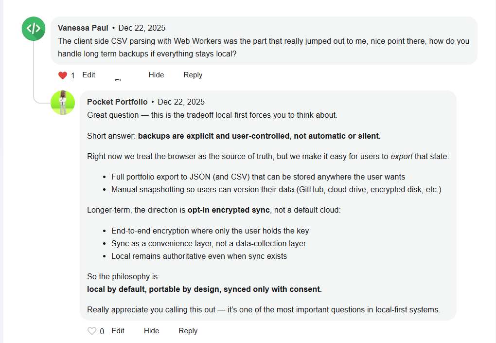

How we built a portfolio tracker that puts you in complete control of your data
We stripped everything back. There is no backend database. No user accounts. No cloud sync. Your financial data lives on your device, not ours.
Next.js (static export). The entire app is JavaScript shipped to the browser.
Browser storage (localStorage and IndexedDB). Your financial data lives on your device, not ours.
Web Workers processing CSV files entirely client-side.
Unlike cloud apps, Pocket Portfolio uses Sovereign Sync to turn your Google Drive into a database. This approach ensures:
Learn how to set up Google Drive Sync and turn your Drive into your personal financial database.
You bought AAPL at £150. Today it's £170.
| Status | Meaning | Value Change |
|---|---|---|
| Unrealised P/L | Price moved, but you haven't sold. | +£20 (13.3%) |
| Realised P/L | You sold at £170 — gain is final. | +£20 (13.3%) |
If AAPL drops back to £150 before you sell, the unrealised gain disappears — you never actually made (or lost) money.
Local by default, portable by design, synced only with consent.
Backups are explicit and user-controlled, not automatic or silent. Right now we treat the browser as the source of truth, but we make it easy for users to export that state: full portfolio export to JSON (and CSV) that can be stored anywhere the user wants.
Longer-term, the direction is opt-in encrypted sync, not a default cloud: end-to-end encryption where only the user holds the key, sync as a convenience layer, not a data-collection layer. Local remains authoritative even when sync exists.
Community Feedback
Here's what the community is saying about our local-first approach:
📸 Screenshot Placeholder
Please add the Vanessa Paul comment screenshot as one of these filenames:
vanessa-paul-comment.pngvanessa-paul-comment.jpgvanessa-paul-comment.jpegPlace it in the same directory as this HTML file.
Our Response:
Short answer: backups are explicit and user-controlled, not automatic or silent.
Right now we treat the browser as the source of truth, but we make it easy for users to export that state:
Longer-term, the direction is opt-in encrypted sync, not a default cloud:
So the philosophy is: local by default, portable by design, synced only with consent.